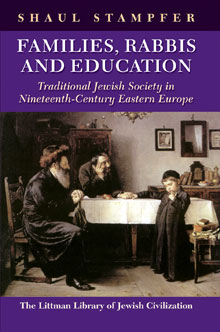

Families, Rabbis and Education
Traditional Jewish Society in Nineteenth-Century Eastern
Europe
The family and the community, which were in a very real sense the core institutions of east European Jewish society, underwent very rapid change in the nineteenth century. These essays look at the past through the prism of the lives of ordinary people, with results that are sometimes surprising, but always stimulating. The topics they treat are varied, but the concern to explain what lay behind the visible reality is common to all of them.
More info
The realities of Jewish life in eastern Europe that concerned the average Jew meant the way their children grew up, the way they studied, how they married, and all the subsequent stages of the life cycle--including the problems of divorce, remarriage, and elderly parents. The family and the community were in a very real sense the core institutions of east European Jewish society. These realities were always dynamic and evolving but in the nineteenth century, the pace of change in almost every area of life was exceptionally rapid.
This collection of essays deals with these social realities objectively and analytically. Some of the essays presented here are classics that have been widely acclaimed, earning their author a well-deserved reputation for authoritative research; all have been comprehensively revised for this book. They avoid both sentimental descriptions and judgmental attitudes. The result is a picture that is far from the stereotyped view of the past that is common today, but a more honest and more comprehensive one.
Topics covered in the studies on education consider the learning experiences of both males and females of different ages. They also deal with and distinguish between study among the well off and learned (not surprisingly, the two went together) and study among the poorer masses. A number of essays are devoted to aspects of educating the elite. Here too, the reconstruction of the realities of the past, as opposed to the stereotypical popular image, reveals the remarkable creativity of what is often mistakenly considered a highly conservative element of society.
Several essays deal with aspects of marriage, a key element in the life of most Jews. Using both quantitative and qualitative sources, the author has been able to identify and document characteristics of both first and subsequent marriages and to highlight and explain trends that have hitherto been misunderstood. The problem of aged parents and the changing nature of the nuclear family is also considered.
The attempt to understand the rabbinate in its social and historical context is no less revealing then the studies in other areas. The realities of rabbinical life ˆ the problems of getting appointments, job security and insecurity, changing responsibilities and the difficulties of dealing with fragmented and modernizing communities -- are presented in a way that explains rabbinic behavior and the complex relations between communities, ideologies, and modernization.
These essays look at the past through the prism of the lives of ordinary people, with results that are sometimes surprising but always stimulating. The topics they treat are varied, but the concern to explain what lay behind the visible reality is common to all of them.
About the author
Shaul Stampfer is Rabbi Edward Sandrow Professor of Soviet and East European Jewry and chairman of the Department of Jewish History at the Hebrew University of Jerusalem. He has also taught at Harvard University and elsewhere, including Moscow (1989–91), where he helped establish the Jewish University. Through his many published articles he has made a seminal contribution to the Jewish social history of eastern Europe, opening up new areas of research in the history of Jewish education, Jewish demography and family life, community organization and leadership, and related topics. He is the author of Lithuanian Yeshivas of the Nineteenth Century: Creating a Tradition of Learning, also published by the Littman Library.
Contents
The Social Implications of Very Early Marriage in Eastern Europe in the Nineteenth Century
Love and Family Life among East European Jewry in the Modern Period
Scientific Welfare and Lonely Old People: The Development of Old Age Homes among Jews in Eastern Europe
Gender Differentiation and Education of the Jewish Woman in Nineteenth Century Eastern Europe
Remarriage among Jews and Christians in Nineteenth-Century Eastern Europe
The Pushke and its Development
Heder Study, Knowledge of Torah and the Maintenance of Social Stratification in Traditional East European Jewish Society
Literacy among East European Jewry in the Modern Period: Context, Background, and Implications
Hungarian Yeshivot, Lithuanian Yeshivot, and Josef Ben David
Hasidic Yeshivot in Interwar Poland
Dormitory and Yeshiva in Eastern Europe
The Controversy over Shechita and the Struggle between Hasidim and Mitnagdim
The Rabbinate in Eastern Europe that Wasn't
Inheritance of the Rabbinate in Eastern Europe in the Modern Period: Causes, Factors, and Development over Time
Reviews
'Represents decades of intensive study of Jewish daily life in eastern Europe. The book brings together many of Stampfer's previously published writings, although several appear here in English for the first time . . . provides us with the oeuvre of a scholar who has spent years thinking about these issues and provides a wonderful context for further study.'
Jeffrey Veidlinger, East European Jewish Affairs
‘Stampfer draws on a huge range of sources . . . to throw light on his central concern: the Jews of eastern Europe in the period of modernization . . . Almost every chapter teaches us anew about something we thought we already knew . . . discoveries that contradict received wisdom abound. His specialty is in considering topics that seem marginal but in fact prove vital in understanding key elements of Jewish life . . . focusing on the social function of each institution rather than idealistic interpretations . . . A sub-theme central to his work is the role and status of women . . . these studies present a picture that contradicts the romantic image of the shtetl Jew that is still so beloved of the general public, and even to some extent among academics . . . While correcting these distortions, Stampfer emphasizes the functionality of Jewish institutions in the changing realities of the time, while also demonstrating the differences between Jews and their neighbours as regards marriage, family life, housing, economics, education and culture. He shows how the traditional Jewish institutions developed and adapted to the challenges of modernity and helped Jews to prosper in a way that was unique to them.’
Moshe Rosman, Gal-Ed
'For many years, Shaul Stampfer has been recognised as an authority in all things dealing with nineteenth-century Jewish Eastern Europe. In his newest book, we have a collection of numerous essays representing more than twenty years of his scholarship, including one essay published for the first time. Stampfer's focus is not on the purely intellectual debates between rabbinic elites. He is more interested in social history, how average people and in particular women lived. Even his discussions of rabbis emphasize such matters as inheritance of rabbinic positions and the rabbi's role in communal life. His sources are quite broad: traditional rabbinic works as well as Hebrew, Yiddish, and Russian texts and newspapers . . .there is much more that can be said about Stampfer's careful scholarship, which is a treat for all readers.'
Marc B. Shapiro, H-Judaic
'Accessible and lively . . . a good read not only for scholars, but also for general readers interested in seeing just how far we have come from that vanished world.'
Jewish Book World
'This book of essays by an exceptionally wide-ranging social and cultural historian is much more than a rich investigation of "traditional society".'
Kenneth B. Moss, Journal of Modern History
'This riveting collection of essays covers a breathtaking scope, the amount of research is impressive, and the level of analysis is as refreshing as it is innovative. It is hard to name any other work that covers such a diverse range of fascinating questions in Jewish history in such a learned and professional manner. The author has an uncanny ability to synthesize a diverse range of material with interpretations and analyses that are as brilliant as they are straightforward. This collection will make an excellent companion to extant English and Hebrew language works on modern Jewish history. It will also make for interesting reading in undergraduate classes and graduate seminars on social history, east European history, and Jewish history. In short, this is a gem of a book, the kind that you will want to read, the kind that students will love to read, the kind that scholars as well will not be able to put down.'
Scott Ury, Religious Studies Review
‘Eruditely documented, clearly explained, subtly argued, these contributions on the evolution of educational and family structures and on the history of the rabbinate renew our knowledge of Jewish society in eastern Europe. Anyone who seeks to understand the transformations peculiar to this period can only consult and explore this work of reference.’
Jean Baumgarten, Revue des études juives

428 pages
ISBN: 978-1-874774-85-3
Hardback out of print
978-1-906764-53-1 paperback
£19.95 / $29.95 paperback
Publication 18 February 2010
6 March 2014 paperback
Other books by this author:

Lithuanian Yeshivas of the Nineteenth Century
Creating a Tradition of Learning